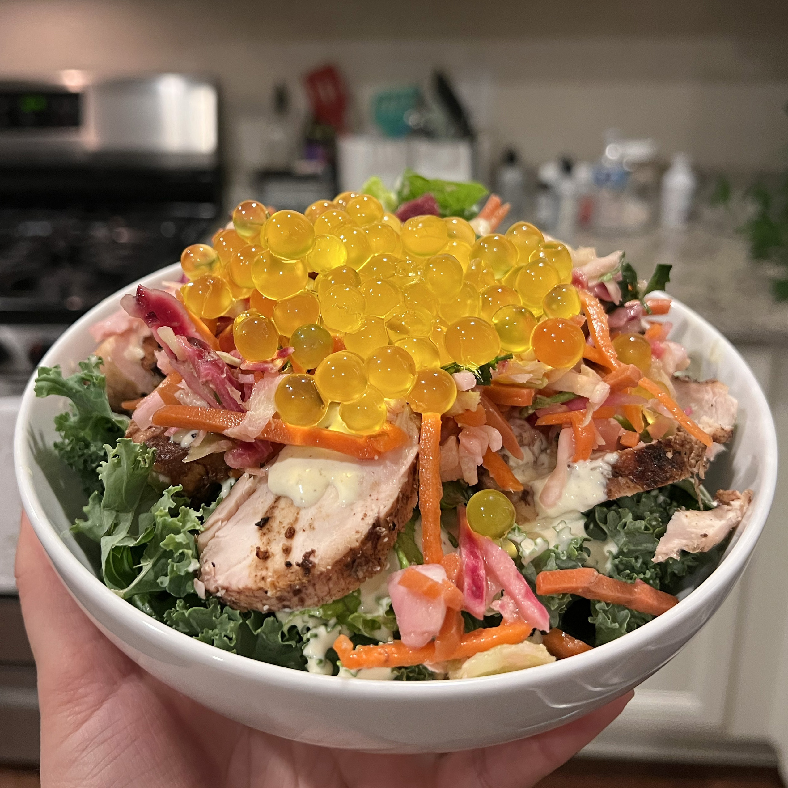

Animal Kingdom Salad
This is my copycat salad recipe from Disney's Animal Kingdom. This salad
has a smokey chicken flavor, fresh greens and bursts of popping fruit
juice. It's from satu'li canteen in Avitar World. It's not the easiest
recipie in the world but it's definitely worth it!

INGREDIENTS
Grilled Canteen Chicken
- 2lb boneless, skinless chicken breasts
- 1/4 cup canola oil
- 3 TBS apple cider vinigar
- 3 TBS fresh minced garlic
- Kosher salt and pepper to taste
Crunchy Slaw
- 1 cup machstick carrots
- 2 cups shredded cabbage
- 3 TBS olive oil
- 3 TBS white vinigar
- Kosher salt and pepper to taste
Salad Base
- head of kale
- 1-2 head of romane lettuce
Creamy Herb Dressing
- 2 cups mayonase
- 1/2 cup water
- 1/4 cup lemon juice
- 1 tsp ground sumac
- 1/2 tsp ground cardamom
- 1/4 tsp tumeric
- Kosher salt and pepper to taste
Topping
INSTRUCTIONS
-
To make the grilled canteen chicken, combine 1/4 cup canola oil 3 TBS
apple cider vinegar 3 TBS fresh minced garlic Kosher salt and pepper
to taste in a medium storage container. Add in the chicken breasts
(cut in half long ways). Let marinate covered, in the fridge for a few
hours if you’re able to. Then grill the chicken (outside grill is
best) until the internal temperature is 165. It’s best to serve the
chicken cold, I make the chicken the day before, then cut into 1 inch
cubes and refrigerate until the next day.
-
To make the crunchy slaw, combine the ingredients listed and let
marinate for a couple of hours.
-
For the dressing, combine the ingredients - these don’t have to
marinate!
-
As for the salad base, precut and washed kale and lettuce is nice but
if it’s whole you can just cut up the greens and wash them. If you
have a salad spinner, it’s a life saver in this situation. But patting
the lettuce dry is another option.
-
Assemble your salad! Use the lettuce/kale as the base, then the
grilled chicken, dressing, slaw and then the boba poppers! Enjoy this
delicious meal!